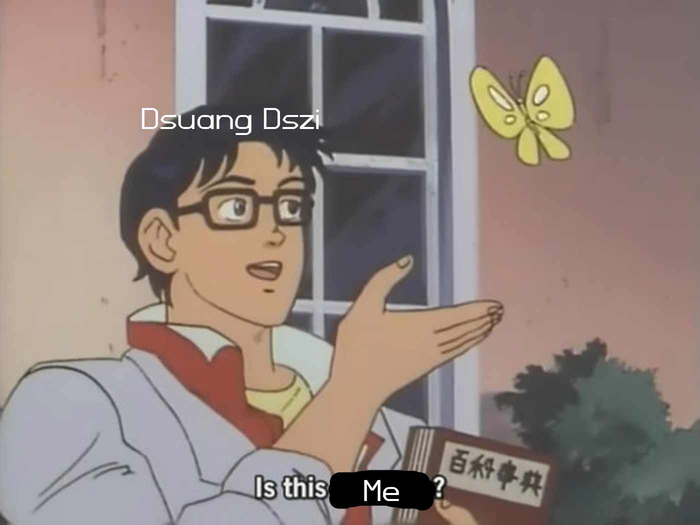

Dsuang Dszi álma (Szabó Lőrincz) tartalmi verselemzés
A vers 3 síkon játszódik, melyből az olvasó először csak kettőt ismer meg. A költő párbeszédét követhetjük nyomon Dsuang
Dszi-vel, a mesterrel, aki álmán keresztül a valóság mibenlétéről elmélkedik. A mester azon lamentál, vajon felébredt-e az
álmából, vagy éppen elaludt és a valóság a másik oldalt van. A költő Dsuang Dszi-t véli valóságosnak és a lepkét álomnak.
Megtudjuk az utolsó két versszakból azonban, hogy a költő egy időtlen narrátorként meséli a vers történéseit, miképp
„kétezer évig töprengett azóta” és már nem csak a lepke valóságosságát kérdőjelezi meg, hanem Dsuang Dszi-ét, sőt, önmagáét
is. Bizonytalanságában a világot és benne mindent „kép és költeményként” ír le, elmosva a határokat a történetek és az azok
alapjául szolgáló valóság között. Az utolsó versszakban meg is erősíti ezt az elmosottságot azáltal, hogy a narrátor
felfedi, ő valójában lehet, hogy nem is Szabó Lőrincz, hiszen azt állítja „mindhármukat” (a lepkét, Dsuang Dszi-t és Szabó
Lőrinczet is) ő álmodja. Eképpen pedig ahogy a lepke „nem is sejtette, hogy ő Dsuang Dszi”, úgy Szabó Lőrincz sem lehet
biztos benne, hogy őt, aki ezt a verset és a karaktereket megálmodta, nem szintén csak valaki álmodja. Ez pedig egy réteggel
lejjebb viszi a történet fonalát, hiszen a lepke, akit Dsuang Dszi álmodott elgondolkoztatta őt, ő Szabó Lőrinczet, aki
pedig a Narrátort, aki eddig ugyan úgy hitt a saját valóságában, mint Szabó Lőrincz a versben, hogy ő maga Szabó Lőrincz.
Ezek a kitalált és/vagy valós karakterek pedig végeredményben elgondolkodtatják az olvasót, hogy vajon ő is egy álomvilágban
él-e. Ha ezt olvasod, remélem te tudod mi az igazság, mert ha nem, akkor már hatan nem tudjuk…
